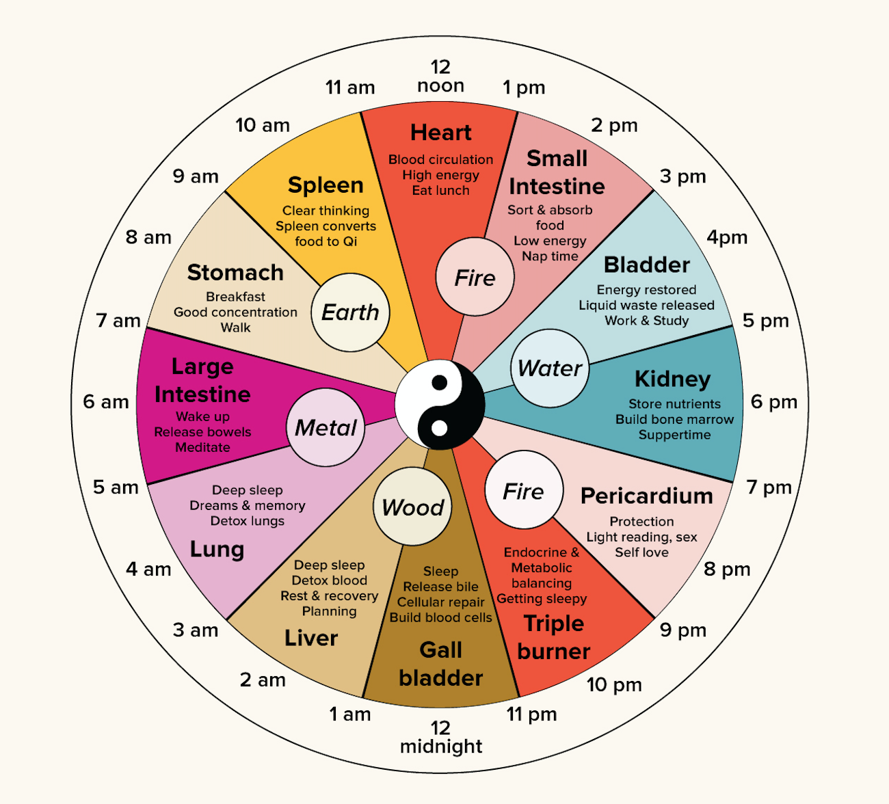

|  |
古人的子午觉是我们现在经常强调的睡眠养生法之一。子时指夜里23时~凌晨1时，属一日时辰中的阴中之阴，同时阳气初生，阴阳俱虚，所以此时段必须休息。午时指中午11~13时，此时是一日时辰中的阳中之阳，阴气初生，阳气由此由盛转衰，所以午后需适当休息以培补阳气。子午之时，阴阳交接，体内气血阴阳极不平衡，此时静卧，可避免气血受损。 晚上熬夜不可取。明代谢肇淛的《五杂俎》中曾说过：“夜读书不可过子时”，“盖人当是时，诸血归心，一不得睡，则血耗而生病矣”。意思就是，读书的时间不能超过子时，如果熬夜读书的话将严重透支健康。明代陈继儒在《珍珠船》中说：“睡是眼之食，七日不眠，眼则枯。”如果每晚11点仍不睡觉，对肝血消耗巨大，日久伤及肾。会逐步造成身体气血双亏，肤色暗沉，痘痘、出油等各种问题冒出来，这时候就是天天用昂贵护肤品，拼命锻炼身体，也不能挽回睡眠不足带来的伤害。 有的人认为晚上睡得晚了，白天可以补回来，其实不然。白天要么睡不着，要么睡不够，即使感觉补过来了，身体气血其实已经损伤大半了。医书《十问》说：“一夕不卧，百日不复。” 至于午觉，也是非常重要的。一个高质量的午睡并不需要很长时间，10~30分钟即可让你精力满电。国外研究证明午睡不仅有利于提高记忆力，还能降血压。如上班或上学条件有限，中午不能睡觉，可静坐一刻钟，闭目养神。 《类修要诀》中总结了四季的起卧规律：“春夏宜早起，秋冬任宴眠，宴忌日出后，早忌鸡鸣前。”句中“宴”是“晚”的意思。简单讲就是，春夏两季应该早起，早不能早过鸡叫（凌晨3~5点）；秋冬两季适合晚起床，晚不能晚过日出（凌晨7~8点）。 |
睡 眠 养 生 |
| Sleep Regimen can benefit us a lot. In TCM, sleeping problems are the described as an imbalance of Yin and Yang qi, which means that Yang is not interacting well with Yin, and preventing restful, restorative sleep. TCM sees the sleep-wake cycle as a part of the natural rhythm of Yin and Yang in the body. Yang Qi is dominant during the day while Yin Qi is dominant at night. The Spiritual Axis (Lingshu)demonstrates the Yin-Yang concept to explain sleep: “When Yang is depleted and Yin is abundant, one’s eyes are closed. When Yin is depleted and Yang is predominant, one is awake.” As we go through our day, the Yin and the Yang Qi in our bodies rises and lowers (like the sea), normal sleeping and waking cycles are therefore controlled by the balance of Yin qi and Yang qi in the body. |
| In TCM our body’s various organs function or replenish themselves at different times of the day. During the day, each organ has its own 2-hour slot, when it is at its peak. During sleep, our Qi works inwardly and takes care of fully restoring and replenishing the body. Your Acupuncturist will recommend going to sleep between 9pm – 11pm, mainly because 11pm-1am is the time for our bile to be released from gallbladder, which is a system in charge of Yang-qi. It is when our blood is running at full speed to clean itself of the day’s dead cells and repair damage. So, if we fall asleep before 11am, our body will get sufficient Yang-qi, and thus help support a healthier body and mental state. |